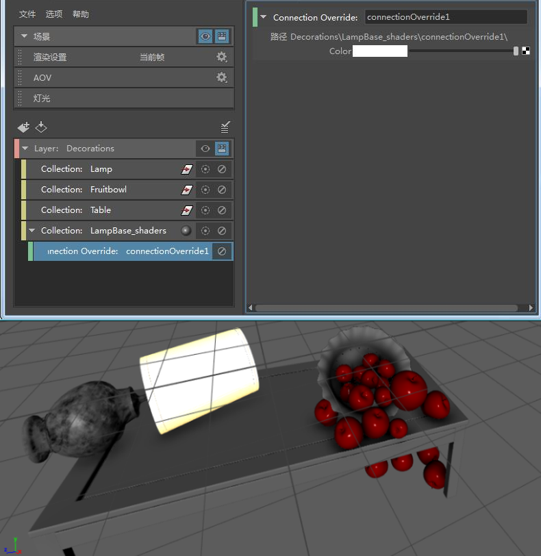

通过拖放或在“特性编辑器”(Property Editor)中键入属性名称，可创建连接覆盖。
仅支持输入连接，不支持输出连接。
此工作流面向高级用户。
创建连接覆盖以覆盖任何属性连接。
- 创建一个集合并向其添加对象。
- 创建第二个集合，并将具有要覆盖的属性和连接的节点添加到其中。
确保从“集合过滤器”(Collection Filters)下拉列表中选择的过滤器包含要覆盖的节点。例如，选择“着色器”(Shader)过滤器以包括着色节点。
若要验证这一点，请单击“查看全部”(View All)以查看集合的成员。
- 在此集合上单击鼠标右键，然后选择“创建连接覆盖”(Create Connection Override)。
- 选择要覆盖的节点，再使用鼠标中键将要覆盖的属性从“属性编辑器”(Attribute Editor)拖放到“特性编辑器”(Property Editor)。
或者，您可以在“特性编辑器”(Property Editor)中输入要覆盖的属性。 您可以 node.attribute 或 attribute 的形式（例如，blinn1.transparency 或 transparency）键入，然后单击“创建”(Create)。请参见通过键入属性名称来创建覆盖。
-
选定连接覆盖之后，在“特性编辑器”(Property Editor)中，单击该属性旁边的贴图按钮
 ，以连接到新渲染节点。
，以连接到新渲染节点。
若要连接到现有渲染节点，使用鼠标中键将其从“大纲视图”(Outliner)或 Hypershade “材质浏览器”(Material Browser)拖放到已覆盖的属性。
 周围将显示红色边界；单击此图标可刷新层并查看更新的结果。
周围将显示红色边界；单击此图标可刷新层并查看更新的结果。
示例
创建连接覆盖，以覆盖指定给为 lamp_body 和 lamp_brassFixture 指定的着色器的“透明度”(Transparency)属性的纹理。
尽管在本示例中以着色器为例，但是您可以遵循相同的准则来覆盖任何属性连接。将要为其覆盖的节点添加到集合，而不是将着色器添加到集合。
- 在层上单击鼠标右键，然后选择“创建集合”(Create Collection)以创建集合 LampBase_shaders。
- 在“特性编辑器”(Property Editor)中，从“集合过滤器”(Collection Filters)下拉列表中选择“着色器”(Shaders)，将着色器节点包含在此集合中。
- 在大纲视图中，确保已启用“显示 > 指定的材质”(Display > Assigned Materials)。在“大纲视图”(Outliner)中展开 lamp_body 和 lamp_brass_Fixture，以显示其材质。选择这两种材质，然后在“特性编辑器”(Property Editor)中单击“添加”(Add)，将其添加到集合中。
- 在“渲染设置”(Render Setup)编辑器中的 LampBase_shaders 集合上单击鼠标右键，然后选择“创建连接覆盖”(Create Connection Override)。
将任何 Maya 着色器的“透明度”(Transparency)属性从“属性编辑器”(Attribute Editor)拖放到“特性编辑器”(Property Editor)，然后将覆盖映射到任何纹理，如“分形”(Fractal)。结果如下所示。
或者，您可以在“特性编辑器”(Property Editor)的“类型属性”(Type Attribute)字段中输入 transparency，然后将覆盖映射到纹理。

可以将连接覆盖同时应用于多个着色器。覆盖节点在集合内的所有着色器中搜索指定属性。在本例中，由于 blinn 和 lambert 都具有“透明度”(Transparency)属性，因此覆盖将应用于这两个着色器的透明度。
连接覆盖将应用于集合中的所有着色器；例如，在本例中：LampBase_shaders 集合中的 lampBody_blinn 和 lampBase_lamber。如果还为果盘指定了 lampBody_blinn 或 lampBase_lambert 着色器，即使最初意图是仅覆盖灯的透明度，也会应用透明度覆盖。因此，有必要验证应用于层中每个对象的着色器，以避免意外覆盖对象的着色器。为此，请在“大纲视图”(Outliner)中选择“显示 > 指定的材质”(Display > Assigned Materials)。